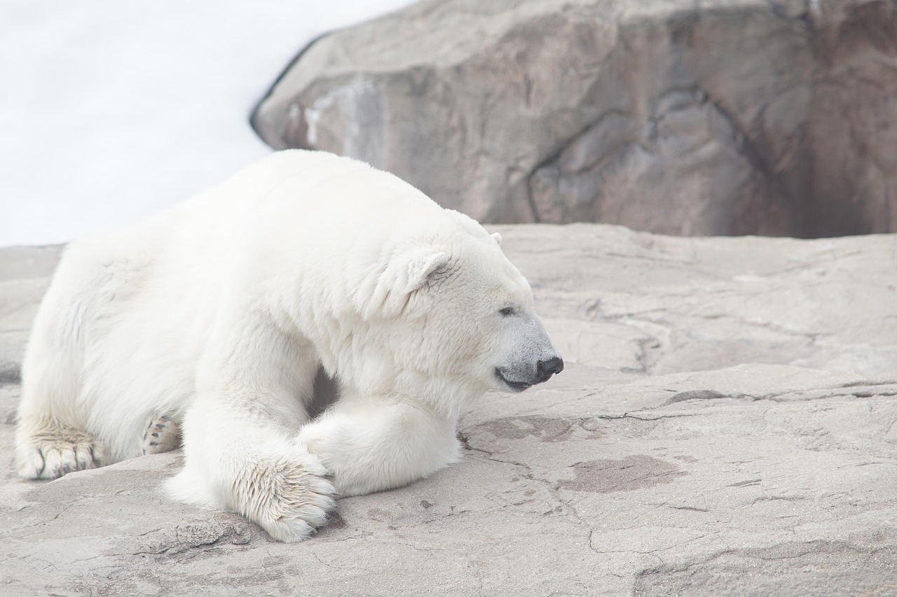
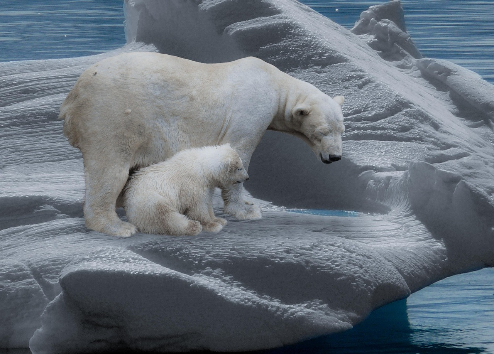
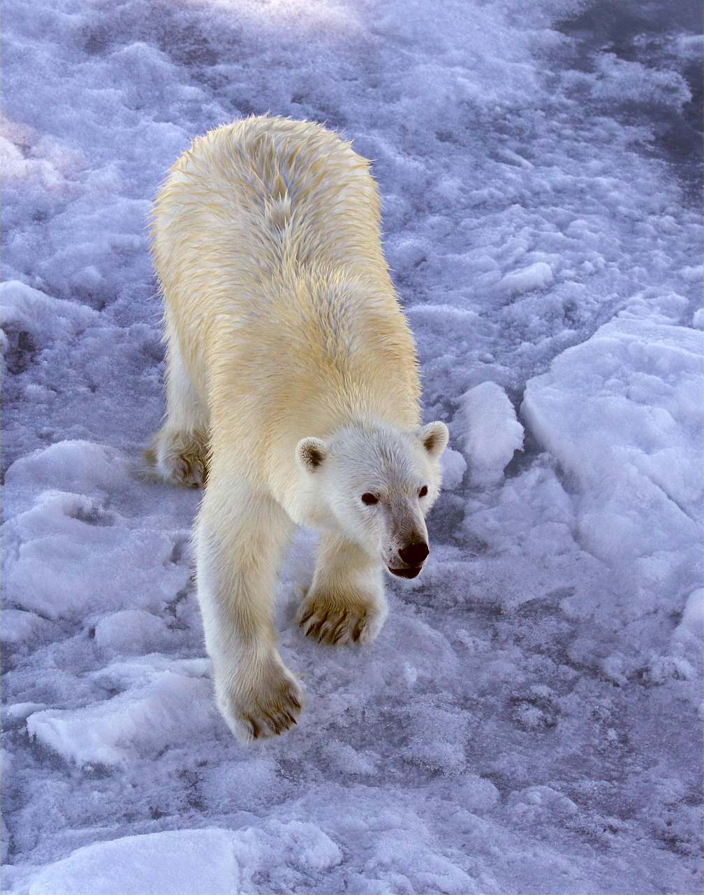

Informações sobre o Urso Polar
O Urso Polar é um mamífero de hábito solitário, que vive em locais onde as águas são cobertas por gelo, sendo a única espécie de urso considerada um mamífero marinho. Ele é encontrado no Círculo Polar Ártico e nas áreas continentais vizinhas. Os ursos polares possuem pelagem branca (sem pigmentação), o que lhes permite uma excelente camuflagem na neve. Porém, apesar dos pelos não apresentarem pigmentação, sua pele é preta, o que ajuda na absorção do calor do sol. Geralmente, se alimentam de mamíferos marinhos, como as focas, e, também, de peixes, e podem pesar mais de 500kg e medir até 3m, sendo os maiores carnívoros terrestres. Esses magníficos animais vivem, em média ,25 anos.

Galeria de Imagens
- 
- 
- 
Preservação do Urso Polar
Devido às mudanças climáticas, os ursos polares estão cada vez mais ameaçados. O derretimento do gelo marinho e a perda de habitat são algumas das principais ameaças que eles enfrentam. É fundamental proteger o ambiente do Ártico e reduzir a emissão de gases de efeito estufa para garantir a sobrevivência desses magníficos animais.
Saiba mais sobre a preservação do Urso Polar